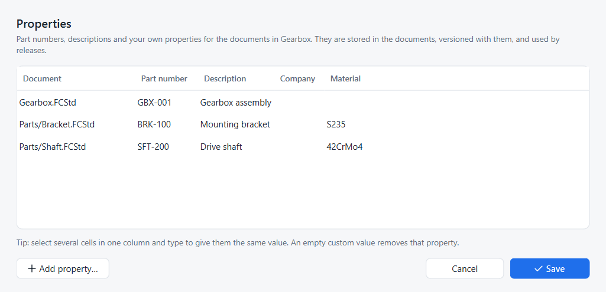

Part numbers and properties
Goal: give the bracket, the shaft and the assembly part numbers, descriptions and a material, in one go.
You need: a project with version control turned on.
This tutorial follows Onshape’s advice in How to keep your product designs organized: name things consistently and fill in part numbers and properties early, so releases, BOMs and searches have something to work with.
Open the properties table
-
Click ⋯ in the panel header and choose Properties…. The Strata menu and toolbar have the same command.
-
Every document of the project is a row, whether it is open or not.

Fill in the table
| Column | Stored in FreeCAD as |
|---|---|
Part number |
the document’s Id property |
Description |
the document’s Comment property |
Company |
the document’s Company property |
your own columns |
the document’s Meta map, one entry per column |
-
Click a cell and type. Press Tab to move to the next cell.
-
To give several documents the same value, select those cells in one column and type: the value goes into every selected cell.
-
Click Add property… to add a column, for example Material. Fill it for the documents it applies to.
-
To remove a custom property from a document, clear its cell.
-
Click Save.
Strata writes the values into the documents (opening closed ones invisibly), saves them, and records one history entry for all of them, such as Edited properties of Bracket, Shaft, Gearbox. Its details read, for example, Properties: Description Mounting bracket; Material S235.
Where the properties are used
-
Releases pre-fill the part number and description from the properties the document had at the released version. See Release a design.
-
Compare and History list property changes like any other change.
-
Merge combines a properties-only edit on one side with a model edit on the other; see Merge workspaces.
-
The values are ordinary FreeCAD document properties, so other workbenches, macros and BOM tools can read them:
doc.Id,doc.Comment,doc.Meta.
Same thing in Python
fc.set_document_properties(project, {document: {column: value}}) does what Save does; project.document_properties(document) reads them back, optionally at an earlier point.
The merging example uses both.